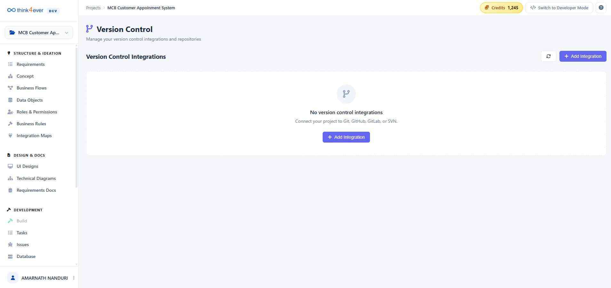

Version Control
The Version Control page is where you manage your project's integration with Git-based platforms (e.g., GitHub, GitLab, Bitbucket). By connecting a repository, you enable the platform to push updates, track changes, and maintain a "Source of Truth" for your application's codebase.

Version Control Integrations Table
The main dashboard displays all active repository connections. The table includes the following key information:
- Integration: The name of the connection (e.g., Main Repository). A folder icon indicates the specific directory mapping within the repository.
- Repository: The full URL path to your remote Git repository (e.g., https://gitlab.com/.../studytool.git).
- Branch: The specific branch currently targeted for synchronization (e.g., main).
- Status: Indicates the current health of the connection. A CONNECTED badge signifies that the platform has successful read/write access.
- Last Sync: Displays the timestamp of the most recent data exchange between the platform and your repository.
Management Actions
On the right side of each integration row, you will find several quick-action icons to manage your repository:
- Sync History (Clock Icon): View a log of previous synchronization events, including commits and updates.
- Push/Pull (Upload/Download Icons): Manually trigger a data transfer. Use Push to send platform changes to your Git provider, or Pull to update the platform with external changes.
- Edit Integration (Pencil Icon): Modify the connection settings, such as changing the target branch or updating credentials.
- Delete (Trash Icon): Remove the integration from the project. Note: This will stop synchronization but will not delete the code from your Git provider.
Best Practices
- Target Specific Branches: It is highly recommended to use a dedicated development or "staging" branch rather than your primary production branch to safely review generated code before merging.
- Check Sync Status: Always verify the Last Sync time before starting a new design or ideation session to ensure you are working with the most recent version of your project.
- Manual Refresh: Use the Refresh icon in the top-right corner of the panel to update the connection status if you have recently made changes on your Git provider's website.